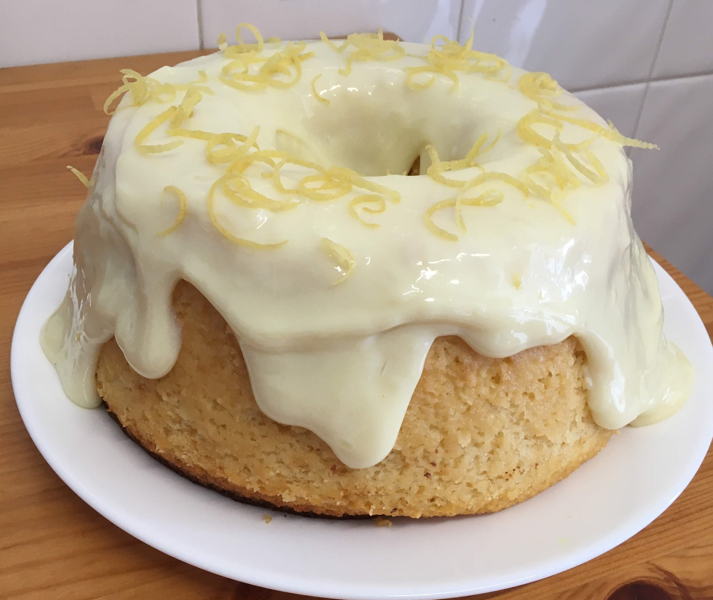

Bolo de limão

Ingredientes
Massa
- 1 xícara (chá) de leite (240 ml)
- 1/2 xícara (chá) de óleo (120 ml)
- 3 ovos
- 1 1/2 xícara (chá) de açúcar (345 g)
- 2 1/2 xícaras (chá) de farinha de trigo (375 g)
- raspas de 1 limão
- 1 colher (sopa) de fermento químico (15 g)
Cobertura
- 1 lata de leite condensado (397 g)
- 1/4 xícara (chá) sumo de limão (60 ml)
- Raspas de 1 limão (opcional)
Modo de preparo
Massa
- Misturar todos os ingredientes.
- Assar em fôrma untada e enfarinhada a 180º C por 35 a 45 minutos.
Cobertura
- Misturar o leite condensado com o sumo de limão e cobrir o bolo já assado.
- Decorar com as raspas de limão.
Observação
Receita do livro Línea Sucralose, originalkmente feita com adoçante culinário no lugar do açúcar.